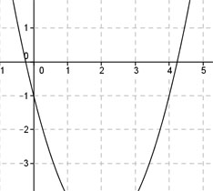

Aufgabe 58 Wie lautet die Funktionsgleichung der dargestellten verschobenen Normalparabel?  x-Koordinate des Scheitelpunktes abgelesen xS = 2 wegen Symmetrie Schnittpunkt mit der y-Achse abgelesen (0|-1). x = 0 , y = -1 In die Scheitelpunktform eingesetzt: y = (x – xS)2 + yS -1 = (0 – 2)2 + yS -1 = 4 + yS |-4 yS = -5 Scheitelpunktform: y = (x – 2)2 - 5 y = x2 - 4x + 4 – 5 y = x2 - 4x - 1